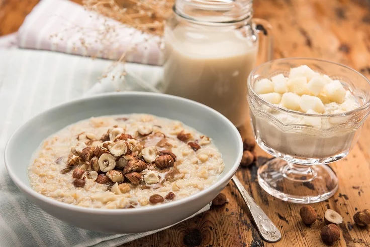

Stop malbaratament alimentari!
Esmorzar de civada i fruites

Informació
Temps
30 minuts
Dificultat
Ingredients
1
Tassa de llet
3
Cullerades de flocs de civada o altres cereals
1
Grapat de panses o fruits secs
1
Poma o pera
1
Platàn
1/2
Cullerada petita de mel o sucre (opcional)
A escollir
Canyella en pols
Instruccions
Escalfeu la llet en un cassó i afegiu la civada. Remeneu-ho i abaixeu el foc. (si voleu, podeu afegir la mel o el sucre de canya)
Tapeu el cassó i deixeu-ho coure durant 8-10 minuts remenant de tant en tant. El temps pot variar en funció de si ho voleu mes o menys espès.
Mentre es couen els cereals, talleu a trossos la fruita i les panses de la forma que més us agradi.
Serviu els cereals cuits en un bol, afegiu la resta d’ingredients i remeneu-ho.
Espolvoregeu la canyella pel damunt.
Tornar a les receptes.